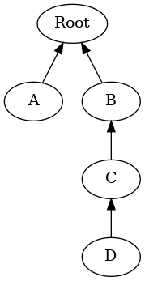

Experiments with tree models in Alloy
Table of Contents
This document describes a translation of some simple Alloy models of trees into first-order logic and some experiments with translating them into first-order logic.
The models are borrowed from teaching materials for a course on software testing published on the web by Jan van Eijck of the University of Amsterdam, specifically from the lecture notes on Specifications and assertions.
The document was written bit by bit and thus has some characteristics of a work log. In particular, the bits at the beginning don't know for sure where the last bits are going, and there are digressions and notes about things that may or may not be important but which I don't want to forget. The reader is requested to be patient.
1. The first Alloy model
1.1. The Alloy
The first model appears on slide 3:
/* Tree Specification in Alloy */
module myexamples/tree
sig Object { b: set Object }
one sig Root, A, B, C, D extends Object {}
fact OneRoot { all x: Object | x = Root <=> no b.x }
fact b_acyclic { no ^b & iden }
fact { C in B.b and D in C.b }
pred show () {}
run show for 5
A (slightly rough) English paraphrase might be as follows. From the signature declarations, we have:
- Objects Root, A, B, C, and D exist; there are no other objects.
Each object has a field b (for branches or branching relation) whose value is a set of objects. Informally: for any object X, X.b is the set of X's children.
Note that b can also be described simply as a binary relation b on objects.
From the fact OneRoot we have:
- An object is the Root object if and only if it is not a member of the value of b for any object.
From the fact b_acyclic we have:
- The intersection of the transitive closure of b (viewed as a binary relation) and the identity relation is empty (i.e. they are disjoint). This means, in effect, that no object X can be reached by starting at X and traversing the b relation any positive number of times.
From the unnamed third fact we have:
- Object C is a member of the b field of B (i.e. C is one of B's children), and D is a child of C.
The predicate show imposes no constraints, so it hold for any instance of the model; the run command, when executed, asks Alloy to find an instance of the predicate show in a universe with at most 5 objects of any signature.
1.2. The FOPC translation
1.2.1. The signature declarations
In our usual first-order calculus notation, we can perhaps render this model as follows.
There is only one top-level signature, so everything is either an object or a member of an automatically supplied signature (like Int), and nothing is both.
(∀x)(Object(x) aut AUTO(x))
The five signatures Root, A, B, C, D are all sub-signatures of Object, and each is declared with a cardinality of one. That means first that there is at least one individual in each of these signatures, and then also that any individual which is a member of these signatures is an object, and if x and y are members of one of these signatures, then x and y are the same individual.
(∃x)(Root(x)) (∀x: Root)(Object(x)) (∀x: Root)(∀y: Root)(x = y) (∃x)(A(x)) (∀x: A)(Object(x)) (∀x: A)(∀y: A)(x = y) (∃x)(B(x)) (∀x: B)(Object(x)) (∀x: B)(∀y: B)(x = y) (∃x)(C(x)) (∀x: C)(Object(x)) (∀x: C)(∀y: C)(x = y) (∃x)(D(x)) (∀x: D)(Object(x)) (∀x: D)(∀y: D)(x = y)
Furthermore, the sub-signatures partition the parent signature:
(∀x: Object)(Root(x) aut A(x) aut B(x) aut C(x) aut D(x))
Without typed declarations and without exclusive or, these become a bit wordier.
(∀x)(Object(x) ∨ AUTO(x))
¬(∃x)(Object(x) ∧ AUTO(x))
(∃x)(Root(x))
(∀x)(Root(x) ⇒ (Object(x) ∧ (∀y)(Root(y) ⇒ x = y)))
(∃x)(A(x))
(∀x)(A(x) ⇒ (Object(x) ∧ (∀y)(A(y) ⇒ x = y)))
(∃x)(B(x))
(∀x)(B(x) ⇒ (Object(x) ∧ (∀y)(B(y) ⇒ x = y)))
(∃x)(C(x))
(∀x)(C(x) ⇒ (Object(x) ∧ (∀y)(C(y) ⇒ x = y)))
(∃x)(D(x))
(∀x)(D(x) ⇒ (Object(x) ∧ (∀y)(D(y) ⇒ x = y)))
(∀x)(Object(x) ⇒
((Root(x) ∨ A(x) ∨ B(x) ∨ C(x) ∨ D(x))
∧ ¬(Root(x) ∧ A(x))
∧ ¬(Root(x) ∧ B(x))
∧ ¬(Root(x) ∧ C(x))
∧ ¬(Root(x) ∧ D(x))
∧ ¬(A(x) ∧ B(x))
∧ ¬(A(x) ∧ C(x))
∧ ¬(A(x) ∧ D(x))
∧ ¬(B(x) ∧ C(x))
∧ ¬(B(x) ∧ D(x))
∧ ¬(C(x) ∧ D(x)))
1.2.2. The fact OneRoot
OneRoot says that for all objects, the object is the Root if and only if no object has it as a child.
(∀x: Object)(Root(x) ⇔ ¬(∃y)(b(y, x)))
1.2.3. The fact b_acyclic
The fact b_acyclic is, closely paraphrased, a statement about the cardinality of a set.
We cannot define the transitive closure operator "^" in a
first-order system, so we will need to define the transitive closure
of b as a named relation, which we'll call tcb for 'transitive
closure of b'. It can be defined recursively in a pattern familiar
from other recursive definitions.
(∀ x, y)(tcb(x, y)
⇔
(b(x,y) ∨ (∃z)(b(x,z) ∧ tcb(z,y))))
We may need to define iden as well:
(∀ x, y)(iden(x, y) ⇔ x = y)
A direct translation of the fact might then be:
¬(∃ x, y)(tcb(x, y) ∧ iden(x, y))
For complex expressions denoting relations, it might be
better to reify and name the relations denoted by the
subexpressions. We have already done that for "^b" and
"iden" here, so we are already part-way there. A blind
reification of each level in the structure would replace
the direct translation with another reification and then
a simpler statement of the fact:
(∀x, y)(tcb_inter_iden(x, y)
⇔
(tcb(x, y) ∧ iden(x, y)))
¬(∃ x, y)(tcb_inter_iden(x, y))
1.2.4. The nameless fact
The third fact specifies that B is the parent of C and C the parent of D. Or, more precisely, that the single atom of signature B is the parent of the single atom of signature C, and so on. Or, given that they are unique, more simply it says that for any atoms x, y, and z of signature B, C, and D respectively, the parent/child relation b holds for the pairs (x, y) and (y, z).
(∀x : B)(∀y : C)(∀z : D)(b(x, y) ∧ b(y, z))
2. Checking an example
2.1. The example
Given the model above, Alloy can generate examples, including one we can display as a nested list:
- Root
- B
- C
- D
- C
- A
- B
Or, as an image:

Can we prove in first-order logic what Alloy has told us, namely that this instance is consistent with the constraints of the model?
2.2. Expressing the example in FOPC
I'm not completely certain of the right way to express this instance as a set of formulas in our target language, but a first cut would be:
b(Root, B) b(Root, A) b(B, C) b(C, D)
On further consideration, however, I see that this assumes that the signature names are constants designating individuals, which is wrong in several ways. A second attempt to describe the example says that in the state of affairs reflected in it, there are five individuals, one for each declared signature, and they have the relations shown. Since the uniqueness of each signature has already been established (or should have been), we don't need to specify that there are exactly five such individuals but can focus on their signatures and relations.
We can conceive of this as a predicate that holds for five individuals, which might be declared in Alloy this way:
pred example[x: Root, y: A, z: B, w: C, v: D] {
y in b[x]
z in b[x]
w in b[z]
v in b[w]
}
Mnemonic names (a for the member of signature A, for example) would be nicer, but b as the name both for the relation b and the atom b of signature B was a step too far for me. (I believe it's also a step too far for the TPTP theorem provers we are using.)
We could also conceive of our description of the example as a predicate that takes no arguments but is just true or not true.
pred example {
some x: Root, y: A, z: B, w: C, v: D {
y in b[x]
z in b[x]
w in b[z]
v in b[w]
}
}
We can translate either of these into FOL; let's pick the second.
example ⇔ (
(∃ x, y, z, w, v)
( (Root(x) ∧ A(y) ∧ B(z) ∧ C(w) ∧ D(v)
∧ b(x, y)
∧ b(x, z)
∧ b(z, w)
∧ b(w, v)
)
2.3. How to check that the example is allowed?
[Note: the discussion below exhibits a certain amount of confusion about how to check examples. That task has since come to seem simpler, but the confused discussion below is retained, since it illustrates that our current understanding did not always seem obvious.]
If there can be no instance that satisfies the statements just given (call their conjunction E), then both of the following formulations of the state of affairs will be true:
- The constraints of the model entail ¬/E/.
- The conjunction of E with the constraints of the model will be inconsistent.
Since entailment of E by M is established, in many systems, by showing that the conjunction M ∧ ¬/E/ is inconsistent, these two statements boil down to the same thing.
Let's try it.
It may be worth pointing out that this particular example poses no great difficulty – it was produced by Alloy, which is very good at producing instances compatible with the constraints of a model, and the example is simple enough that one can easily see that it's consistent with the model. Moreover, it's small enough that one could in a pinch assume five individuals and generate a complete set of closed clauses and a complete set of literals, and show that the set of literals has no contradictions. The point of trying to use a theorem prover to show that the example is consistent with the constraints is to gain a tool for use on manually constructed examples.
2.4. A TPTP translation of the model and example
In TPTP notation, first-order formulas are labeled as such and given names and roles. So the overall structure of each formula will match the following grammar (I'm ignoring whitespace for simplicity):
tptp-formula: "fof(", name, ",", role, ",", formula, ")".
name: [L], [L; Nd; "_"]*.
role: "axiom" { start here }
; axiom-like
; "conjecture" { formula to be proved }
; other-roles
.
axiom-like: "hypothesis" { assumed true, used like axioms }
; "definition" { universally quantified equations
or equivalences with atomic LHS,
intended to define symbols }
; "assumption" { like axiom but "must be discharged
before a derivation is complete" }
; "lemma" { has been proved, must follow from axioms }
; "theorem" { has been proved, must follow from axioms }
{ problem with non-redundant lemma or theorem
is ill-formed }
other-roles: { probably irrelevant for us? }
"corollary" | "negated_conjecture" | "plain"
| "type" | "interpretation" | "fi_domain" | "fi_functors"
| "fi_predicates" | "unknown".
formula: ...
The FOPC rules given above can, I think, be rendered into TPTP as follows. Some notes:
- Since TPTP uses the Prolog convention of spelling variables with initial uppercase letters and requiring functors to begin with lowercase letters (or be quoted), I've lowercased all the signature names.
- The theorem prover E objects if the same predicate symbol is used
with different arities, so this TPTP translation writes "
pc(X, Y)" where the logical rules given above write "b(x, y)".
/* Signature Object */
fof(sigo1, axiom,
( ! [X] : (object(X) | auto(X)))).
fof(sigo2, axiom,
(~ ? [X] : (object(X) & auto(X)))).
/* Signatures root, a, b, c, d */
fof(sigr1, axiom, (?[X] : root(X))).
fof(sigr2, axiom,
( ! [X] : (root(X) => (object(X) & ( ! [Y] : (root(Y) => (X = Y)))))) ).
fof(siga1, axiom, (?[X] : a(X))).
fof(siga2, axiom,
( ! [X] : (a(X) => (object(X) & ( ! [Y] : (a(Y) => (X = Y)))))) ).
fof(sigb1, axiom, (?[X] : b(X))).
fof(sigb2, axiom,
( ! [X] : (b(X) => (object(X) & ( ! [Y] : (b(Y) => (X = Y)))))) ).
fof(sigc1, axiom, (?[X] : c(X))).
fof(sigc2, axiom,
( ! [X] : (c(X) => (object(X) & ( ! [Y] : (c(Y) => (X = Y)))))) ).
fof(sigd1, axiom, (?[X] : d(X))).
fof(sigd2, axiom,
( ! [X] : (d(X) => (object(X) & ( ! [Y] : (d(Y) => (X = Y)))))) ).
/* Root, A-D partition Object */
fof(sigosubs, axiom,
( ! [X] : ( object(X) =>
( (root(X) | a(X) | b(X) | c(X) | d(X))
& ~(root(X) & a(X))
& ~(root(X) & b(X))
& ~(root(X) & c(X))
& ~(root(X) & d(X))
& ~(a(X) & b(X))
& ~(a(X) & c(X))
& ~(a(X) & d(X))
& ~(b(X) & c(X))
& ~(b(X) & d(X))
& ~(c(X) & d(X)))))).
/* fact OneRoot */
fof(oneroot, axiom,
(![X]: (root(X) <=> (~?[Y]: (pc(Y,X)))))).
/* definition of tcb (^b) */
fof(def_tcb, axiom,
(![X, Y]: (tcb(X, Y) <=> ((pc(X, Y))|(?[Z]:(pc(X, Z) & tcb(Z, Y))))))).
/* fact b_acyclic */
fof(b_acyclic, axiom,
(~?[X, Y]:(tcb(X,Y) & (X = Y)))).
/* fact 3 (nameless) */
fof(fact3, axiom,
(![X,Y,Z] : ((b(X) & c(Y) & d(Z)) => (pc(X, Y) & pc(Y, Z))))).
The example translates into TPTP syntax as follows:
/* Definition of example */
fof(example1, definition,
(example <=> ?[X, Y, Z, W, V] :
(root(X) & a(Y) & b(Z) & c(W) & d(V)
& pc(X,Y) & pc(X,Z) & pc(Z,W) & pc(W,V)))).
2.5. Testing ways to run the example
2.5.1. Initial attempt to test the example
[Note: the approach described here does not now appear to be the simplest way to check that an example is consistent with the axioms.]
To check whether the example is possible, we can ask the prover to prove that it is impossible.
fof(ex1nogo, conjecture, ~example).
If we place the TPTP description of the model, with this conjecture,
in a file named tree.jve1.p and pass it to the theorem prover E,
with "eprover --auto --output-file=tree.jve1.e.out tree.jve1.p",
then (as expected) E fails to prove the conjecture.
For the record: the version of E I'm running appears to be 2.6 "Floral Guranse".
(One detail was a little puzzling. I thought that the default value
for the –cpu-limit option was 300 (seconds), but E ran for half
an hour or so and produced 35 MB of output before I stopped it.
Closer examination of the output of "eprover -h" shows my
misunderstanding. What it says is "The option without the optional
argument is equivalent to --cpu-limit=300." That is, if you specify
"--cpu-limit", you get 300 seconds.)
Unfortunately, any automated theorem prover will sometimes fail to prove a true conjecture, so this is not completely satisfactory. What we would like is a clear indication that the example is consistent with the assumptions. In a tableau proof, we can (at least in some cases) produce a proof tree which is not closed but is complete, and we can construct a counterexample to the conjecture by reading off the values for various literals by running down any open branch. Can we do that, or something analogous, with E or with any other theorem prover?
2.5.2. Diagnosing the problem
After a digression to a simpler example, I tried this again, with a soft CPU limit of 30 seconds. It timed out.
Next, I tried a primitive binary chop.
- Tried the first half of the model (down to axiom sigd2 inclusive). It showed the (truncated) model satisfiable, in about 15 msec.
- Added sigosubs and oneroot; that is 42 lines of 63. Satisfiable, 23 msec.
- Added def_tcb and b_acyclic. I wonder if the recursion here is part of the problem. It is; E times out.
- Leave the definition of tcb in place, but comment out the translation of b_acyclic. Still times out.
- Comment out the two axioms added in step 3 of this diagnostic process, restore all the others: fact3, example. Times out.
- Comment out definition of example. Shown satisfiable in 23 msec.
- Try alternate definition of example (as predicate of arity 5). Satisfiable, 23 msec.
Retrying the two definitions of the example, one making example a proposition true iff there are five individuals with a given configuration and the other making it a predicate over five arguments, I find that I am unable to replicate the timing shown for step 5. Either way it takes a little over 20 milliseconds.
2.5.3. A simpler way
As the reader may know, some automatic theorem provers work by assuming the negation of the conjecture and deriving a contradioction – a sort of mechanized reductio ad absurdum. In such a theorem prover, it should be straightforward to see whether a set of axioms is consistent, without trying to prove a theorem.
And behold! some such provers – at least E and Vampire – are perfectly happy to do this.
So a simpler and more reliable way to show that the example is consistent with the axioms is to feed the prover input containing:
- the axioms shown above
- the definition of a predicate representing the example
- the example-predicate as a hypothesis as shown below.
fof(ex1nogo, hypothesis, example).
If there is no conjecture in the input, both E and Vampire will take their task to be checking the axioms and hypotheses for satisfiability. (The author of E is explicit that finding models for sets of axioms is not E's strength, and other provers may do better.)
The simplest way to combine the axioms with different conjectures and hypotheses will be to write the axioms to one file, the conjectures and hypotheses to different files, and then combine them before calling the provers. Both E and Vampire accept a problem description on the standard input, so the shell command can look like this:
cat tree.jve1.axioms.p \
tree.jve1.ex-def.p \
tree.jve1.ex-hyp.p \
| eprover --auto \
--soft-cpu-limit=120 \
--output-level=0
First, the three files containing the axioms, the definition of the predicate example, and the hypothesis that example holds are concatenated using cat and fed into the standard input port of E, invoked with a soft CPU limit of 120 seconds, in 'automatic' mode (which is what the documentation recommends as "the easiest way to get good performance".
When we invoke E as shown, it times out without producing a result.
Using the --auto-schedule option causes E to try an array of
strategies, but none succeed here.
Vampire can be invoked thus:
cat tree.jve1.axioms.p \
tree.jve1.ex-def.p \
tree.jve1.ex-hyp.p \
| vampire --mode casc_sat \
-t 30
Here, we have specified a time limit of 30 seconds, and a casc_sat
mode, which implements a strategy used in CASC competitions for
problems whose specifications are expected to be satisfiable.
Invoked with mode casc_sat, Vampire tries a portfolio of approaches,
one of which succeeds and produces the message "Finite Model Found!"
The logging output is a little terse, but seems to indicate that the
successful approach involved choosing "fmb" (for 'finite model building
for satisfiable problems') as the 'saturation algorithm'. So a more
direct way to get a result here is to invoke Vampire with the option
"-sa fmb".
Note: using the fmb option appears to cause some sort of problem. Immediately after the "Finite Model Found!" message, I get the messages
% SZS status Satisfiable for 164958 Aborted by signal SIGSEGV on
followed by normal-looking output from Vampire.
3. Checking an assertion
Having presented the example above, van Eijck remarks:
- This looks OK, but is it?
- Hmm, maybe not. We forgot to say that every other object but the root has exactly one B-predecessor.
- Maybe it follows from our specification. Let us check.
He then suggests an assertion that can be checked:
assert SingleParent
{ all x,y,z: Object | z in x.b and z in y.b => x=y }
check SingleParent for 5
Alloy checks the assertion by finding a counter-example within the scope specified; in principle, a prover can check the assertion more broadly (although it's clear that in practice at least some disproofs are going to take the form of finding a counter-example).
fof(single_parent, conjecture,
![X, Y, Z] : ((object(X) & object(Y) & object(Z)) =>
((pc(X,Z) & pc(Y,Z)) => (X = Y)))
).
How does that in-principle checking work out in practice? Since this conjecture is known to be false, we are not expecting any theorem prover to produce a proof, and it is not surprising that none do. It would be nice to have a clear statement that the generalization is false, possibly with a counter-example. Here, results are mixed.
- When E is invoked with
--auto-schedule, each tactic it tries times out before reaching a conclusion. - When Vampire is invoked with
--mode casc, it too fails to prove the conjecture; some of its tactics time out, while others report only "Refutation not found, incomplete strategy". - When Vampire is invoked with
--mode casc_sat~, however, the tactic summarized as "fmb+101av=off : fmbsr=1.6 : lma=on : nm=64 : nwc=3 : sp=reversearity : urr=on258" reports "Finite Model Found!" and signals an SZS status of "CounterSatisfiable".
This appears consistent with the observation that for software, the task of finding models (or counter-examples) and that of finding proofs are distinct problems which require different approaches, however much they may overlap in principle.
4. A second Alloy model
The second model appears on slide 7 of van Eijck's presentation; it changes SingleParent from being an assertion to being a fact.
/* Corrected specification */
module myexamples/tree
sig Object { b: set Object }
one sig Root, A, B, C, D extends Object {}
fact OneRoot { all x: Object | x = Root <=> no b.x }
fact SingleParent
{ all x,y,z: Object | z in x.b and z in y.b => x=y }
fact b_acyclic { no ^b & iden }
fact { C in B.b and D in C.b }
pred show () {}
run show for 5
The English paraphrase is the same as before, with one addition for the fact SingleParent:
- No object is in the value of b for two distinct parent objects.
In conventional predicate calculus, this could be written:
(∀ x, y, z)((Object(x) ∧ Object(y) ∧ Object(z))
⇒ ((pc(x, z) ∧ pc(y, z))
⇒ (x = y)))
A TPTP rendering is essentially the same as above, with conjecture changed to axiom:
fof(single_parent, conjecture,
![X, Y, Z] : ((object(X) & object(Y) & object(Z)) =>
((pc(X,Z) & pc(Y,Z)) => (X = Y)))
).
Van Eijck formulates no conjectures or assertions relating to this modified model. We could think of some on our own, but that seems too much like work. So we move on to van Eijck's third model.
5. A third model
5.1. The Alloy of slide 10
On slide 9, van Eijck considers the definition of trees starting not from a branching relation b but from a parenthood relation P. He identifies three requirements:
- There is exactly one root, defined as an object without parents (P-successors)
- Every other object has exactly one P-successor (parent).
- The relation P is acyclic.
In Alloy:
module myexamples/newtree
sig Object { p: lone Object }
one sig Root, A, B, C, D extends Object {}
fact OneRoot { all x: Object | x = Root <=> no x.p }
fact SingleParent
{ all x,y,z: Object | y in x.p and z in x.p => y=z }
fact p_acyclic { no ^p & iden }
fact { C in p.B and D in p.B }
pred show () {}
run show for 5
5.2. Equivalent in FOPC
We can render this new model in first-order logic as follows.
The description of the signatures is the same as above:
// Everything is an Object or else it's automatically
// supplied by Alloy. Nothing is both.
(∀x)(Object(x) ∨ AUTO(x))
¬(∃x)(Object(x) ∧ AUTO(x))
// Subsignatures Root, A, B, C, D have one instance each.
(∃x)(Root(x))
(∀x)(Root(x) ⇒ (Object(x) ∧ (∀y)(Root(y) ⇒ x = y)))
(∃x)(A(x))
(∀x)(A(x) ⇒ (Object(x) ∧ (∀y)(A(y) ⇒ x = y)))
(∃x)(B(x))
(∀x)(B(x) ⇒ (Object(x) ∧ (∀y)(B(y) ⇒ x = y)))
(∃x)(C(x))
(∀x)(C(x) ⇒ (Object(x) ∧ (∀y)(C(y) ⇒ x = y)))
(∃x)(D(x))
(∀x)(D(x) ⇒ (Object(x) ∧ (∀y)(D(y) ⇒ x = y)))
// The subsignatures partition the set of Objects.
(∀x)(Object(x) ⇒
((Root(x) ∨ A(x) ∨ B(x) ∨ C(x) ∨ D(x))
∧ ¬(Root(x) ∧ A(x))
∧ ¬(Root(x) ∧ B(x))
∧ ¬(Root(x) ∧ C(x))
∧ ¬(Root(x) ∧ D(x))
∧ ¬(A(x) ∧ B(x))
∧ ¬(A(x) ∧ C(x))
∧ ¬(A(x) ∧ D(x))
∧ ¬(B(x) ∧ C(x))
∧ ¬(B(x) ∧ D(x))
∧ ¬(C(x) ∧ D(x)))
The declaration of Object tells us that Objects have a field named p, the optional value of which is an Object. In relational terms, this means that:
- for any object x, there is at most one object y for which
the relation p(x, y) holds;
- if p(x, y) holds, then x and y are objects.
(∀ x, y)(p(x, y) ⇒ (∀z)(p(x, z) ⇒ (z = y))) (∀ x, y)(p(x, y) ⇒ (Object(x) ∧ Object(y)))
Two things should be noted about the second formula, regarding the types of p's arguments:
- It also applies to the b relation in the first specification of trees, although we failed to formulate it there.
- Alloy allows relation names to be overloaded, so the right-hand side of the implication will, in the general case, be a disjunction of statements about possible argument types. (Overloading will also affect the cardinality constraints.)
The fact OneRoot is misnamed; it does not say that there is one root, but only says that an object is a root iff it has no parent. The fact that there is only one root is captured by the signature-related axioms above.
(∀x)(Object(x) ⇒ (Root(x) ⇔ ¬(∃y)(p(x, y)))
The fact SingleParent is much as before but with the inverse relation: For any objects x, y, and z, if y is a parent of x and z is a parent of x, then y = z.
(∀ x, y, z)((Object(x) ∧ Object(y) ∧ Object(z))
⇒ (p(x, y) ∧ p(x, z)
⇒
(y = z)))
The fact p_acyclic requires the same machinery as was needed above for b_acyclic:
- a definition of the transitive closure of p, which we'll call TCP;
- a definition of the binary iden relation; and
- a definition of the intersection of pcb and iden.
TCP is the transitive closure of p.
(∀ x, y)(TCP(x, y)
⇔
(p(x,y) ∨ (∃z)(p(x,z) ∧ TCP(z,y))))
iden is the identity relation.
(∀ x, y)(iden(x, y) ⇔ x = y)
As a set, TCPandiden is the intersection of sets TCP and iden. In the predicate-based translation we are using, TCPandiden is the logical conjuntion of predicates TCP and iden.
(∀ x, y)(TCP_inter_iden(x, y)
⇔
(TCP(x, y) ∧ iden(x, y)))
The set TCPandiden is empty (or equivalently: the predicate TCPandiden is true of no (x, y) pairs).
¬(∃ x, y)(TCP_and_iden(x, y))
The nameless fact C in p.B and D in p.B again constrains the set of
possible trees (but differently from the nameless fact of the earlier
model). Because we know that each of the signatures B, C, and D
has cardinality one, it is tempting to translate this sentence as a
sentence about individuals:
(p(b, c) ∧ p(b, d)
But in general, every Alloy expression denotes a set, not an individual; the closest Alloy comes to referring to individuals are references to singleton sets. So the correct translation is a little wordier:
(∀x)(C(x) ⇒ (∃y)(B(y) ∧ p(x, y))) ∧ (∀x)(D(x) ⇒ (∃y)(B(y) ∧ p(x, y)))
5.3. The modification and a new conjecture
At this point, van Eijck asks whether the fact SingleParent in its
new form is perhaps redundant, entailed already by the declaration
lone p: Object. So he removes the fact and replaces it with a
conjecture.
This conjecture seems worth checking, so we'll translate the third model into TPTP notation.
5.4. A TPTP rendering in FOF
In the FOF (first-order formula) language of the TPTP project (thousands of problems for theorem provers), the modified model using a parent relation can, I think, be represented as follows:
% Everything is an Object or automatically supplied by Alloy.
% Nothing is both.
fof(top_signatures_1, axiom,
![X]: (object(X) | auto(X))).
fof(top_signatures_disjoint, axiom,
~(?[X]: (object(X) & auto(X)))).
% Subsignatures Root, A, B, C, D have one instance each.
fof(sig_root_extends_object, axiom,
![X]: (root(X) => object(X))).
fof(sig_root_min1, axiom, ?[X]: (root(X))).
fof(sig_root_max1, axiom,
![X]: (root(X) => ![Y]: (root(Y) => X = Y))).
fof(sig_a_extends_object, axiom,
![X]: (a(X) => object(X))).
fof(sig_a_min1, axiom, ?[X]: (a(X))).
fof(sig_a_max1, axiom,
![X]: (a(X) => ![Y]: (a(Y) => X = Y))).
fof(sig_b_extends_object, axiom,
![X]: (b(X) => object(X))).
fof(sig_b_min1, axiom, ?[X]: (b(X))).
fof(sig_b_max1, axiom,
![X]: (b(X) => ![Y]: (b(Y) => X = Y))).
fof(sig_c_extends_object, axiom,
![X]: (c(X) => object(X))).
fof(sig_c_min1, axiom, ?[X]: (c(X))).
fof(sig_c_max1, axiom,
![X]: (c(X) => ![Y]: (c(Y) => X = Y))).
fof(sig_d_extends_object, axiom,
![X]: (d(X) => object(X))).
fof(sig_d_min1, axiom, ?[X]: (d(X))).
fof(sig_d_max1, axiom,
![X]: (d(X) => ![Y]: (d(Y) => X = Y))).
% The subsignatures partition the set of objects.
fof(subsigs_of_object, axiom,
![X]: (object(X) =>
((root(X) | a(X) | b(X) | c(X) | d(X))
& ~(root(X) & a(X))
& ~(root(X) & b(X))
& ~(root(X) & c(X))
& ~(root(X) & d(X))
& ~(a(X) & b(X))
& ~(a(X) & c(X))
& ~(a(X) & d(X))
& ~(b(X) & c(X))
& ~(b(X) & d(X))
& ~(c(X) & d(X))))).
% p takes objects as arguments
fof(p_types, axiom,
![X, Y]: (p(X, Y) => (object(X) & object(Y)))).
% p is functional
fof(p_functional, axiom,
![X, Y]: (p(X, Y) => ![Z]: (p(X, Z) => (Z = Y)))).
% definition of root-ness
fof(oneroot, axiom,
![X]: (object(X) => (root(X) <=> ~?[Y]: (p(X, Y))))).
% TCP is the transitive closure of p.
fof(tcp_def, definition,
![X, Y]: (tcp(X, Y)
<=>
(p(X,Y) | ?[Z]: (p(X,Z) & tcp(Z,Y))))).
% iden is the identity relation.
fof(iden_def, definition,
![X, Y]: (iden(X, Y) <=> X = Y)).
% tcp_and_iden is the intersection of tcp and iden.
fof(tcp_and_iden_def, definition,
![X, Y]: (tcp_inter_iden(X, Y)
<=>
(tcp(X, Y) & iden(X, Y)))).
% The set tcp_and_iden is empty.
fof(p_acyclic, axiom,
~?[X, Y]: (tcp_and_iden(X, Y))).
% B is the parent of both C and D
fof(fact_4, axiom,
(![X]: (c(X) => ?[Y]: (b(Y) & p(X, Y)))
& ![X]: (d(X) => ?[Y]: (b(Y) & p(X, Y))))).
The SingleParent assertion can be represented as a conjecture.
% conjecture SingleParent
fof(singleparent, conjecture,
![X, Y, Z]: ((object(X) & object(Y) & object(Z))
=> ((p(X, Y) & p(X, Z))
=>
(Y = Z)))).
5.5. Can SingleParent conjecture be proved?
Both E and Vampire quickly prove the SingleParent conjecture, but each also reports:
% SZS status Unsatisfiable
(Interestingly, this appears in the --mode casc_sat output from
Vampire, but not in --mode=casc".)
Checking the axioms without the conjecture confirms that the axioms as originally given are inconsistent. (For the record: one stray negation, possibly originating in the typo of tilde for exclamation point, and two stray predicates applied to X when they should have applied to Y.)
At this point, the original goals of this working paper appear to have been achieved. The paper illustrates:
- translation of simple Alloy models into FOPC and into the first-order form of the TPTP problem language;
- use of theorem provers to detect typos in the formulation of axioms (not one of the original goals, but helpful);
- use of theorem provers to check conjectures, whether false or true.
But a small extension may also be worth exploring: the translation of the final model into the TFF0 ('monomorphic typed first-order form') of TPTP.
5.6. A TPTP rendering in TFF
In the TFF (typed first-order formula) language of the TPTP project, the model could, I think, look like the following.
First, we declare the top-level signature object.
% Everything is an Object or automatically supplied by Alloy. tff(sig_object, type, object: $tType). % Nothing is both. % (No statement necessary; follows automatically.)
Note that declaring object as a type leads to an axiom that at least one object exists: TFF0 has no empty sorts.
Because the form of TFF we are using (TFF0?) has only disjoint
top-level types which (together with $i) partition the set of
individuals, we cannot treat Root, A, B, C, and D
as types, and we cannot use those names in quantifiers. So
the statements about these sub-signatures remain mostly similar
to those given above in the fof language.
% Root, A, B, C, D are subsignatures of Object.
% I.e. the predicates Root, A, B, C, D apply to objects.
% And they have one instance each.
tff(sig_root_extends_object, type,
root: ( object ) > $o).
tff(sig_root_min1, axiom,
?[X : object]: (root(X))).
tff(sig_root_max1, axiom,
![X : object]: (root(X) => ![Y : object]: (root(Y) => X = Y))).
tff(sig_a_extends_object, type,
a: (object) > $o).
tff(sig_a_min1, axiom,
?[X : object]: (a(X))).
tff(sig_a_max1, axiom,
![X : object]: (a(X) => ![Y : object]: (a(Y) => X = Y))).
tff(sig_b_extends_object, type,
b: (object) > $o).
tff(sig_b_min1, axiom,
?[X : object]: (b(X))).
tff(sig_b_max1, axiom,
![X : object]: (b(X) => ![Y : object]: (b(Y) => X = Y))).
tff(sig_c_extends_object, type,
c: (object) > $o).
tff(sig_c_min1, axiom,
?[X : object]: (c(X))).
tff(sig_c_max1, axiom,
![X : object]: (c(X) => ![Y : object]: (c(Y) => X = Y))).
tff(sig_d_extends_object, type,
d: (object) > $o).
tff(sig_d_min1, axiom,
?[X : object]: (d(X))).
tff(sig_d_max1, axiom,
![X : object]: (d(X) => ![Y : object]: (d(Y) => X = Y))).
It is not clear a priori whether the typed quantifiers in the formulas
just given are helpful, or if they are wholly redundant given the type
declarations. (A posteriori, it appears that Vampire, at least, is
unhappy if they are not present: a quantifier without a sort is taken
to declare the variable as being of type $i, which Vampire takes to
be disjoint from object.
% The subsignatures partition the set of objects.
tff(subsigs_of_object, axiom,
![X : object]:
(((root(X) | a(X) | b(X) | c(X) | d(X))
& ~(root(X) & a(X))
& ~(root(X) & b(X))
& ~(root(X) & c(X))
& ~(root(X) & d(X))
& ~(a(X) & b(X))
& ~(a(X) & c(X))
& ~(a(X) & d(X))
& ~(b(X) & c(X))
& ~(b(X) & d(X))
& ~(c(X) & d(X))))).
% p takes objects as arguments
tff(p_types, type, p: (object * object) > $o).
% p is functional
tff(p_functional, axiom,
![X : object, Y : object]:
(p(X, Y) => ![Z : object]: (p(X, Z) => (Z = Y)))).
% definition of root-ness
tff(oneroot, axiom,
![X : object]: (root(X) <=> ~?[Y : object]: (p(X, Y)))).
% TCP is the transitive closure of p.
tff(tcp_type, type, tcp : (object * object) > $o).
tff(tcp_def, definition,
![X : object, Y : object]:
(tcp(X, Y)
<=>
(p(X,Y) | ?[Z : object]: (p(X,Z) & tcp(Z,Y))))).
% iden is the identity relation on objects.
% user-defined predicates cannot be polymorphic.
tff(iden_type, type, iden : (object * object) > $o).
tff(iden_def, definition,
![X : object, Y : object]: (iden(X, Y) <=> X = Y)).
% tcp_and_iden is the intersection of tcp and iden.
tff(tcp_and_iden_type, type,
tcp_and_iden : (object * object) > $o).
tff(tcp_and_iden_def, definition,
![X : object, Y : object]:
(tcp_and_iden(X, Y)
<=>
(tcp(X, Y) & iden(X, Y)))).
% The set tcp_and_iden is empty.
tff(p_acyclic, axiom,
~?[X : object, Y : object]: (tcp_and_iden(X, Y))).
% B is the parent of both C and D
tff(fact_4, axiom,
(![X : object]: (c(X) => ?[Y : object]: (b(X) & p(X, Y)))
& ![X : object]: (d(X) => ?[Y : object]: (b(X) & p(X, Y))))).
The SingleParent assertion can be represented as a conjecture.
% conjecture SingleParent
tff(singleparent, conjecture,
![X : object, Y : object, Z : object]:
((p(X, Y) & p(X, Z))
=>
(Y = Z))).
Attempting to prove this conjecture turned up (again) a number of issues in the hand translation, which seem to indicate that the translations from Alloy into FOPC and TPTP really should be automated. Concretely, Vampire was unhappy with the input until all predicates had been properly declared specifying that their arguments were of type object and all quantifiers were also typed with object.